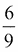
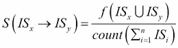
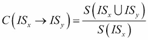
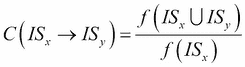
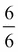
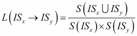
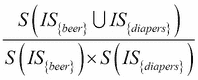
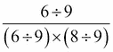

市场购物篮分析由一些建模技术组成，零售商和电子商务市场通常使用这些技术来分析购物车和交易，以找出客户购买最多的商品、他们购买的商品种类、特定商品销售最多的旺季是什么，等等。在这一章中，我们将关注基于物品的交易模式，以检测和预测人们正在购买和最有可能购买的物品。让我们先来看看购物篮分析的正式定义，然后我们再来看看核心概念、度量标准和与之相关的技术。最后，我们将总结如何实际使用这些结果来制定数据驱动的决策。
购物篮分析通常包括几种基于简单原则的建模技术，即购物时，如果您购买了某组商品(在机器学习行话中也称为项目集)，您可能会购买其他特定商品或该项目集的商品。我们分析人类的购物模式，并应用统计技术来产生频繁项目集。这些项目集包含人们根据过去的购物历史最有可能一起购买的项目组合。
项目集的一个简单例子是人们经常在市场上购买啤酒和尿布。项目集可以描述为{ beer, diapers }。频繁项集是由比平常出现得更频繁的项集来表示的，并由称为支持度的度量来指定，我们将在后面讨论这一点。因此，根据前面的例子，你可以说，如果我买啤酒，我也最有可能买diapers，并向我推荐该产品。我们还可以通过分析购物来在这些项目集之上构建项目关联规则。关联规则的一个例子可以通过使用符号{ beer, diapers } -> { milk }的项目集来表示，这将表明如果我一起购买啤酒和尿布，我很可能也一起购买牛奶！
既然你已经知道了购物篮分析实际上是做什么的，让我们来看看算法和技术中广泛使用的一些定义和概念。
交易数据集表示每天/每周记录顾客购物交易的数据库或数据集，由顾客一起购买的各种物品组成。我们将举一个交易数据集的例子，在本章后面的算法中我们也会用到它。考虑下面的数据集，它也可以从本章的shopping_transaction_log.csv文件中获得。数据如下图所示:
前面数据集中的每个像元也被定义为一个项。项目也用符号In表示，其中n表示n-th项目编号，在正式定义中，以及在构建算法伪代码或手工进行一些计算时，示例用花括号括起来。例如，单元格组合(1, A)表示项目I1，其值被描述为{ beer }。
项目集定义为在任何购物交易中一起购买的项目集或项目组。因此，基于交易，这些项目被称为同时发生。我们将项目集表示为ISn，其中 n 表示n-th项目集编号。项目集值将被括在大括号中。前面数据集中的每一行都表示一个特定的事务，项的组合构成了项集。项目集IS1由{ beer, diapers, bread }描述。
关联 规则或公正规则是具有左侧 ( LHS )和右侧右侧 ( RHS )的陈述，并且表明如果我们有LHS上的商品要购买，我们也可能有兴趣购买 RHS商品。这表示项目集是相互关联的。它们被标记为ISx → ISy，这意味着如果我的购物车中有项目集x，我也会对购买项目集y感兴趣。一个示例规则可以是{ beer } → { diapers }，它表示如果我的购物车中有啤酒，我也有可能会购买尿布！我们现在将看到一些决定如何测量频繁项目集和关联规则强度的度量标准。
一个项集的频率基本上就是一个特定的项集在所有事务的列表中出现的次数。请注意，项目集可以是事务中较大项目集的子集，并且仍然被计数，因为该子集表示包含特定项目集的项目集是与一些其他产品一起购买的。我们可以将其表示为f(ISn)，其中ISn是一个特定的项目集，函数f( )给出了该项目集在整个基于事务的数据集中的出现频率。以我们之前的数据集为例，f(IS{beer, diapers})是6，这表明在我们的数据集中的所有交易数据中,IS{beer, diapers}总共被购买了6次。
项目集的支持被定义为事务数据集中包含特定项目集的事务部分。基本上，它意味着项集被购买的次数除以数据集中的事务总数。可以表示为 ，其中
，其中S( )表示项集ISn的支持度。以我们前面的例子为例，S(IS{beer, diapers})是，这给了我们66.67%。对关联规则的支持是类似的，可以描述为，其中我们使用交集操作符来查看两个项目集在事务数据集中同时出现的频率。对我们之前定义的规则S(IS{beer} → IS{diapers})的支持又是或66.67%，因为啤酒和尿布组合的项目集总共出现了六次，正如我们之前看到的。当评估来自关联规则或频繁项目集的结果时，支持度越高越好。支持更多的是衡量规则的质量，检测过去的事务中已经发生了什么。
关联规则的置信度定义为，对于一个包含规则LHS上的项集的新事务，该事务也包含规则RHS上的项集的概率或可能性。规则的置信度可以描述为，其中C( )表示规则的置信度。请注意，由于支持度的计算涉及到将项集频率除以分母中的事务总数，因此上述等式的RHS最终会简化为获取分子和分母的项集频率。因此，我们得到作为获得置信度的简化公式。我们之前的规则C(IS{beer} → IS{diapers})的置信度是或100%，这意味着如果我的购物篮里有啤酒，购买尿布的概率是百分之百！这是相当高的，如果你回到数据集，你可以看到这是真的，因为对于每一个涉及啤酒的交易，我们可以看到与之相关的尿布。因此，你可以看到，作出预测和建议并不是火箭科学，而只是简单的应用数学和数据之上的统计方法。请记住，信心更多的是检测规则的质量，根据过去的交易数据预测未来会发生什么。
关联规则的提升定义为LHS和RHS上的两个项目集的组合的支持度除以每个项目集的支持度的乘积的比值。规则的提升可以描述为，其中L( )表示规则的提升。对于我们的示例规则，L(IS{beer} → IS{diapers})是，计算为，给出了1.125的值，这相当不错！一般来说，规则的提升是评估规则质量的另一个度量。如果lift为> 1，则表明LHS中项目集的存在导致客户也将购买RHS上的项目集的概率增加。这是确定项目集关联以及哪些项目影响人们购买其他项目的另一个非常重要的方法，因为如果lift有一个值= 1，这意味着LHS和RHS上的项目集是独立的，购买一个项目集不会影响客户购买另一个项目集。如果lift为< 1，则表明如果客户在LHS上有一个项集，那么在RHS上购买该项集的概率相对较低。
如果你已经被上一节的数学信息弄得不知所措，放松下来，深呼吸！你不需要记住一切，因为大多数时候，算法会为你计算一切！你需要擅长的是以正确的方式使用这些技术和算法，并解释结果以过滤出必要和有用的东西。当您稍后开始实现和应用这些技术时，前面提到的概念会对您有所帮助，我们将在本节中简要描述这些技术。我们将主要讨论本章将要探讨的三种技术。
产品权变矩阵的评估是最简单的开始方法，它更像是一种全球趋势捕捉机制，显示了在权变矩阵中一起购买的最多的产品。我们将在后面使用的R包arules有一个很好的功能，叫做 crossTable ，它帮助将项目对的联合出现交叉列表到一个列联矩阵中。我们将使用该矩阵来预测客户最有可能与矩阵中的其他产品一起购买哪些产品。
频繁项集的生成是从产品列联矩阵停止的地方开始的，因为它有一个严重的限制，即不能在任何时间点处理成对的产品。因此，为了进入可以有任意数量产品的项目集并从中检测模式，我们将使用机器学习构建我们自己的频繁项目集生成器！利用这一点，我们将能够获得具有特定支持值的频繁项目集，这些支持值指示可能一起购买的项目集，从而形成向客户推荐产品的基础。
最后，我们将使用出色的Apriori算法实现关联规则挖掘，该算法使用频繁的项集作为其规则生成过程的一部分。你已经在第二章、中看过这个演示，让我们帮助机器学习。但是，这一次我们将使用其成熟的功能来查看产品项目集之间的关联规则，使用我们之前讨论的指标来评估规则的质量，并使用这些规则来对购物交易中的产品进行趋势预测和推荐。
你现在知道了什么是购物篮分析，使用了什么技术，以及它们给我们带来了什么结果。请记住，市场篮分析的输出是一组在交易中频繁出现的项目或产品。现在，这种情况之所以会发生，是因为强大的支持、信心和提升增强了它的联想，顾客倾向于购买它们，或者也可能是因为零售商将商品放在一起或并排放在商店或网站上。然而，请记住，强大的关联并不总是偶然发生的，这就是零售商总是试图利用我们前面谈到的技术来促进销售。
以下是一些关键的数据驱动的决策，零售商通常倾向于根据从购物篮分析中获得的结果做出这些决策:
- 包含成对产品(如尿布和啤酒)的频繁项目集通常应该并排放置在商店中，这将使客户易于访问，他们会倾向于购买更多的产品。
- 具有大量不同项目或产品计数的频繁项目集应该放在项目集的特定类别或主题中，例如特殊的杂货组合或婴儿产品。对整个项目集提供的折扣吸引了更多的顾客。
- 当顾客浏览购物或电子商务网站时，在与项目集相关联的特定产品页面中，具有从频繁项目集或关联矩阵中获得的项目或产品的长列表的关联规则可被显示为对顾客的产品建议和推荐。应该注意的是，这些规则的提升至少要大于1，就像我们之前讨论的那样。
- 推荐系统、定向广告和营销一切都可以建立在购物篮分析的结果之上。
这些决定如果在正确的地点和正确的时间做出，可以极大地帮助零售商提高他们的销售额并获得良好的利润。
既然我们已经对购物篮分析实际上做了什么以及它是如何工作的有了坚实的理解，我们将从为我们的第一项技术构建一个简单的算法开始，在这项技术中，我们使用基于在超市购买的热门产品的产品关联矩阵来做出产品推荐，然后继续使用R语言强大的机器学习功能来构建更复杂的分析器和推荐器。